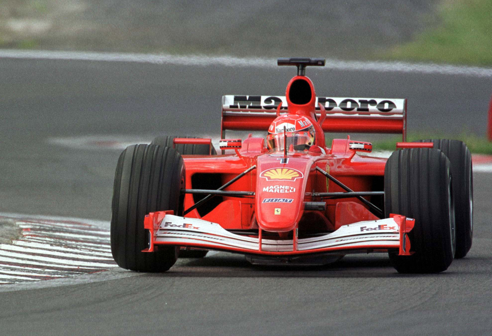
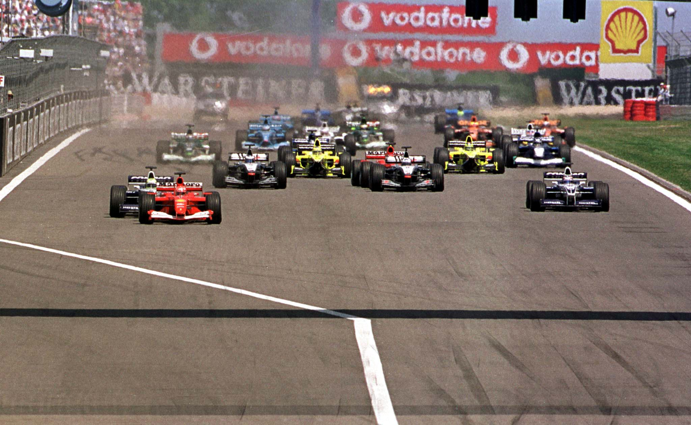
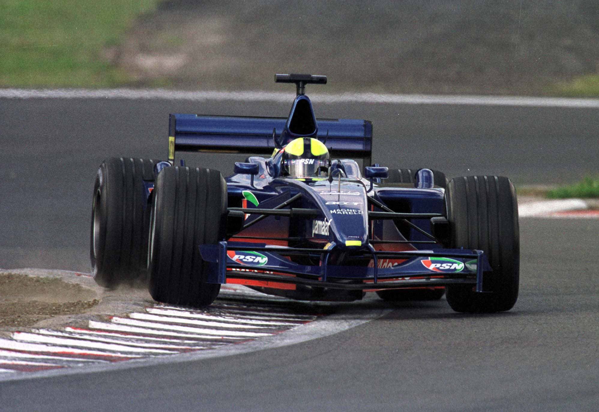
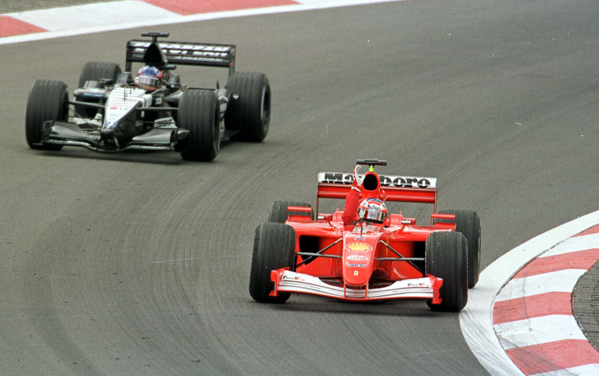
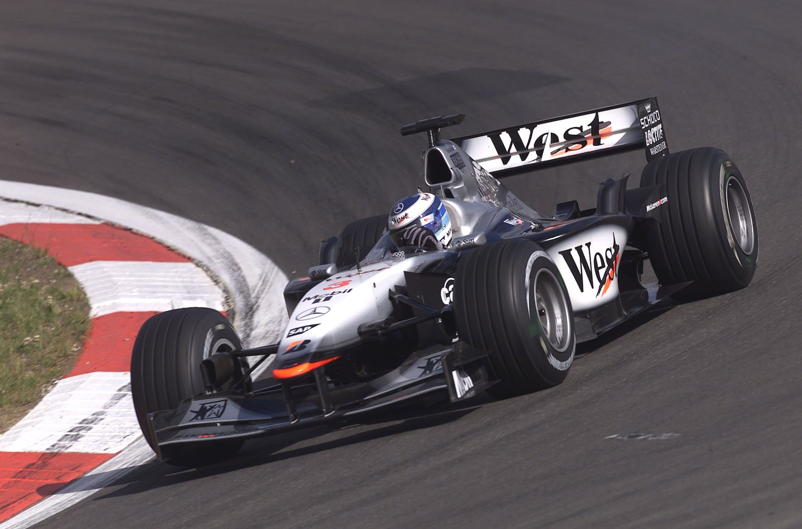
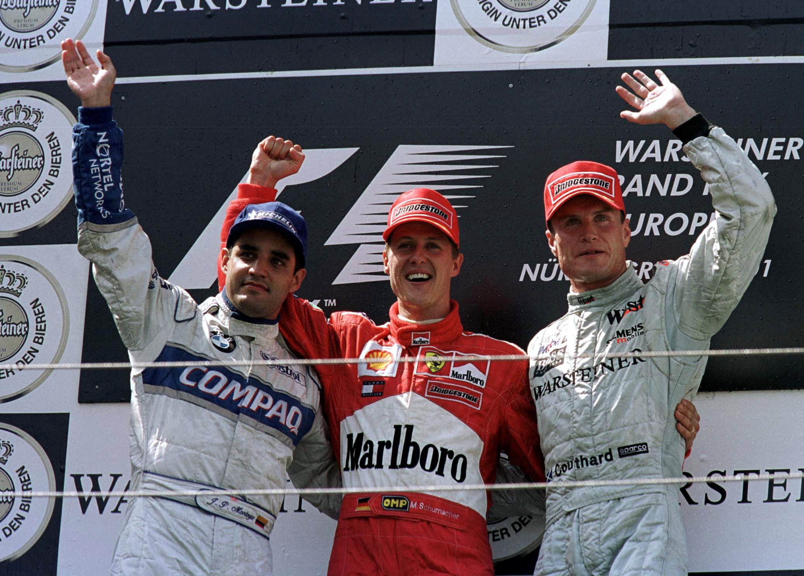

CONSTRUINDO O TETRA

Michael Schumacher vence em Nurburgring e novamente tem o irmão Ralf como seu principal adversário
POR AMÉRICO TEIXEIRA JR.
Na Fórmula 1, antecipar resultados é um risco muito grande e quase sempre essa ousadia é coroada com grandes doses de erros. Ocorre que, em se tratando do piloto alemão Michael Schumacher, falar em tetracampeonato envolve uma boa margem de segurança para o apostador. É claro que muita coisa ainda pode acontecer até o final do campeonato, principalmente diante do avanço da BMW Williams e do forte confronto verificado entre os irmãos Schumacher, que travam um confronto inédito pelas vitórias (irmãos sempre correram na Fórmula 1, mas disputar vitórias é predicado exclusivo dos Schumacher). Mas é verdade também que o quadro não poderia ser mais favorável para Michael Schumacher após a realização do Grande Prêmio da Europa, nona etapa do Campeonato Mundial de Pilotos e Construtores, disputada domingo em Nurburgring. Venceu a prova, a 49ª de sua carreira e a quinta na temporada, e esse resultado faz dele o líder disparado, agora com 68 pontos, exatos 24 de vantagem sobre o vice-líder, o escocês David Coulthard, que soma 44 após chegar em 3º na etapa.
A alta performance de Schumacher na Alemanha foi alcançada após um grande susto, pouco antes da largada. A pole position, a 39ª da carreira e a 7ª na atual disputa, já indicava a condição de superioridade do piloto da Ferrari, mas na volta de alinhamento seu carro “apagou”. Logo após o warm up, o piloto alemão escolheu largar com o carro reserva. E foi justamente esse que sofreu uma pane elétrica. Mas como parece que tudo dá certo para Michael Schumacher no atual certame, ele voltou aos boxes em tempo de pegar o carro com o qual havia feito a pole e largar — e nem precisou correr, pois uma moto, da BMW, foi colocada à suas disposição para retornar ao pit.

“SAI RALF!” — Na largada, a 1ª posição foi disputada pelos irmãos Schumacher, uma vez que a primeira fila fora completada por Ralf Schumacher, com Williams BMW. Como sempre faz — e não seria diferente em se tratando de seu irmão —, o tri-campeão fechou o caminho daquele que se mostrava em condições de roubar-lhe a posição de honra e contornou a primeira curva em 1º, seguido por Ralf Schumacher, Juan Pablo Montoya, David Coulthard, Mika Häkkinen e Jarno Trulli. Rubens Barrichello, que havia marcado o 4º melhor tempo na classificação, optou por largar com o tanque cheio para fazer uma única parada de reabastecimento e troca de pneus, e perdeu três posições.
Começava assim uma das mais monótonas provas da temporada, não havendo aumento de emoções nem por ocasião dos pits. Michael Schumacher dava sinais de que preparava-se para duas paradas e imprimiu uma performance de corrida muito forte início, sempre seguido de perto por seu irmão da BMW Williams e também por Montoya. A primeira ausência da prova foi acontecer na volta 8, quando o brasileiro Tarso Marques abandonou com problemas no funcionamento do motor European (Ford) e no câmbio automático.

A corrida também não começou bem para Luciano Burti. O piloto do Prost Acer AP04, embora houvesse planejado apenas uma parada nos boxes, precisou fazê-lo ainda na 12ª passagem em razão de bolhas nos pneus traseiros, situação que provocou uma saída de pista. Sempre otimista, Burti festejou a evolução constante dos pneus Michelin e o seu desempenho no final, que lhe conferiu a 7a melhor volta da prova. A partir da 15ª volta, os dois Schumacher travaram uma disputa muito forte pela liderança que durou até a 28ª, quando os dois foram para os boxes ao mesmo tempo. Esse momento da prova acabou com a pressão que o piloto da Ferrari estava recebendo. Os mecânicos da Ferrari foram mais eficientes em 1s3 e, como se não bastasse Ralf Schumacher voltar para a pista em maior desvantagem para o líder, ainda ultrapassou a linha divisória entre a saída do pit e a pista, infração que lhe valeu uma punição de dez segundos.

Na volta 31 foi a vez de Enrique Bernoldi deixar a prova com travamento de câmbio na 5ª marcha do Arrows Asiatech. A partir da 32ª volta, verificou-se uma disputa entre David Coulthard, então 3º colocado com o McLaren Mercedes, e Montoya, que já voltava à pista após a sua parada nos pits na volta 29. O ímpeto do colombiano voltou a fazer-se presente e, na 33ª passagem, ele precisou travar rodas e passar direto em uma chicane para tão bater na traseira do piloto escocês da McLaren. Apesar de perder tempo na tentativa de superar David Coulthard, Montoya tratou de acelerar forte para tirar a diferença que o separava de Michael Schumacher. Quando tentava a melhor performance possível antes de parar nos boxes, assinalou a melhor volta da prova, com 1min18s354. Todas as atenções, portanto, ficavam reservadas para a segunda e última parada, o que ocorreu na 51ª volta para Michael Schumacher e Juan Pablo Montoya. Como havia acontecido antes, a Ferrari foi mais eficiente que a Williams, dessa vez em 0s4. Rubens Barrichello, que chegou à conclusão de que suas chances seriam melhores se tivesse optado pela estratégia de duas paradas, ainda teve a sua corrida prejudicada por uma escapada na volta 60, mesmo sem ter representado a perda da 5ª colocação. Os abandonos de Jos Verstappen na volta 61 e a rodada de Jean Alesi, na penúltima volta, quando lutava pela 10º colocação com Kimi Raikkonen, com Sauber Petronas, foram os últimos lances de um Grande Prêmio que teve dois lances de destaque após a bandeirada final.

BRONCA — Ainda na área de pesagem, Ralf Schumacher foi tirar satisfações com o vencedor sobre aquilo que o piloto da Williams considerou um “fechada” de Michael Schumacher na largada. Como se não bastasse a irritação de Ralf ao perder as chances de lutar pela vitória em razão de um erro estúpido que resultou na punição, a pouca atenção Michael Schumacher aos seus reclamos deixou-o ainda mais irritado. Já no pódio, mais protocolar do que nunca, Schumacher fez questão de não se dirigir a Juan Montoya, deixando o piloto colombiano um tanto isolado, em que pese estar saboreando um importante 2º lugar, pois já completara sete provas sem pontuar. Com o resultado, Ralf Schumacher e Rubens Barrichello tornaram ainda mais aguda a disputa particular entre ambos pelo 3º posto do campeonato. Registrando duas vitórias e um 4º posto com gosto de derrota, o piloto da Williams registra um ponto de desvantagem em relação a Barrichello, que foi a 24 com os dois conquistados em Nurburgring. Entre os Construtores, A Ferrari já registra 94 pontos e deixou Nurburgring com um total de 41 pontos sobre a outrora forte adversária McLaren, que registra 53.
